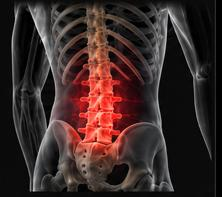
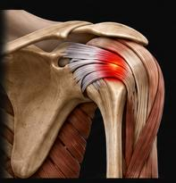
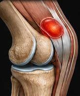
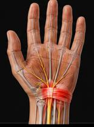
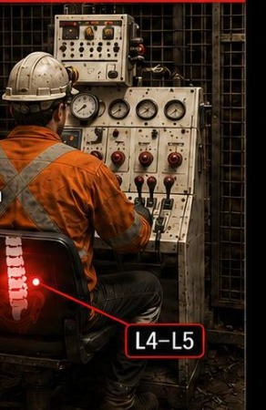
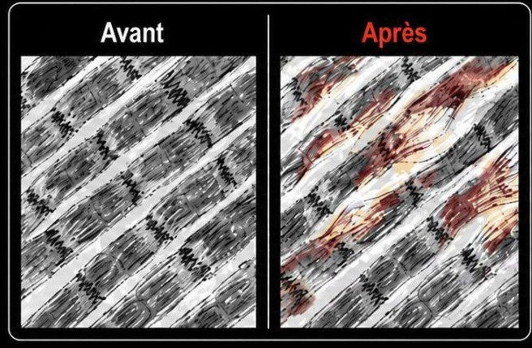

+

Lombalgie
Douleur du bas du dos, le plus fréquent.
DétailsUn outil brisé se remplace. Ton dos, tes épaules et tes genoux doivent durer. Deux sections bien distinctes, selon ton besoin :
Tous les sujets à ton rythme : types de TMS, facteurs de risque, sommeil, bons gestes, avec l'exploration interactive (schéma cliquable, carte du corps, simulateur de poste de travail).
Section 2 · Formation guidéeParcours pas-à-pas avec quiz, score et attestation : idéal pour les nouveaux travailleurs.
Les troubles musculosquelettiques ne sont pas un détail : ils touchent une grande partie des travailleurs et pèsent lourd, chaque année, sur la santé et le travail.
Sources : CNESST, statistiques annuelles 2023 · INSPQ
Un trouble musculosquelettique (TMS), c'est une atteinte des muscles, des tendons, des nerfs, des ligaments ou des articulations, causée ou aggravée par le travail. Rarement le résultat d'un seul accident : il s'installe progressivement, quand les gestes répétés, les efforts et les postures dépassent la capacité du corps à récupérer. Ça commence par un simple inconfort et ça peut finir en lésion durable, d'où l'importance d'agir tôt.

Douleur du bas du dos, le plus fréquent.
Détails
Inflammation d'un tendon : épaule, coude, poignet.
Détails
Inflammation des bourses séreuses : genoux, épaules.
Détails
Compression du nerf médian au poignet.
DétailsClique un point lumineux ou une étiquette de la planche pour voir la zone touchée, les TMS fréquents, les facteurs en cause et les bons réflexes.
Chez les travailleurs, le risque vient surtout de la tâche, du corps et de l'environnement immédiat :
👆 Tout est cliquable : les 3 familles, chaque mot dans les cercles, les 10 pastilles autour, chacune est reliée en pointillé à sa famille de couleur.
Un TMS n'a pas une seule cause : effort, posture, répétition, fatigue et environnement se cumulent.
Sous terre, plusieurs contraintes s'additionnent sur un même quart. Coche celles qui touchent ton poste pour mesurer le risque :
Un TMS s'installe par étapes. La même atteinte passe d'un simple inconfort à une douleur tenace, puis à une lésion durable. Plus la douleur dure, plus la récupération est longue, d'où l'importance d'agir dès le départ.
Ça tire ou ça brûle à l'effort, puis ça passe au repos. Fatigue locale, raideur en fin de quart. C'est ici qu'il faut agir.
La douleur revient plus vite, dure plus longtemps et persiste même hors effort. Le sommeil et le rendement en souffrent.
La douleur reste même au repos, l'atteinte est installée : gênes fonctionnelles, récupération longue et incertaine.
Le bon moment pour agir, c'est dès l'inconfort (phase aiguë, le stade vert). Plus on attend, plus on glisse vers la douleur puis la lésion. Les lésions chroniques sont rares mais de mauvais pronostic : passé ce stade, une prise en charge devient nécessaire.
Le corps est ton premier outil de travail : cette courte vidéo (2 min) montre comment l'entretenir au quotidien (sommeil, activité physique, récupération) pour mieux encaisser les contraintes du travail.
Quelques gestes simples qui protègent ton dos, tes épaules et tes articulations, surtout en position assise prolongée.
Garde la charge collée à toi, dos en position naturelle, et pivote avec les pieds plutôt qu'en tordant le tronc.
Alterne assis, debout et en mouvement. Aucune position n'est bonne trop longtemps, même la meilleure.
Lève-toi quelques secondes régulièrement : ça relance la circulation et réhydrate les disques avant qu'ils ne se crispent.
Quelques étirements ciblés au fil du quart gardent les muscles souples et soulagent le bas du dos.
Un muscle froid se blesse plus vite : 5 minutes de mobilisations valent mieux que des semaines d'arrêt.
Un inconfort qui revient n'est pas une faiblesse à cacher : pris tôt, un TMS se règle vite. Parles-en à ton superviseur.
Tu retrouveras tous ces réflexes en détail (les 4 règles, les postures à éviter, le signalement) dans la partie « Les bons réflexes au poste de travail », plus bas dans la page.
Assis aux commandes pendant des heures, le bas du dos encaisse en silence. Clique chaque point pour voir le détail.
Le tronc ne bouge presque plus. Sans variations de pression, le disque n'est plus « pompé » : l'eau, les nutriments et l'oxygène entrent moins (revois la comparaison animée de la section).
Assis, le bas du dos perd sa courbure naturelle (la lordose lombaire). La pression se répartit mal et charge davantage l'avant des disques.
Comprimé en continu, le disque perd son eau au fil du quart. Moins hydraté, il amortit moins bien les chocs et les vibrations de la machine.
Les disques du bas de la colonne, surtout L4-L5, encaissent le plus de pression en position assise. Année après année, l'usure s'accumule : c'est la dégénérescence discale.

Réf. : Kastelic, Kozinc et Sarabon, 2018; Billy, Lemieux et Chow, 2014.
Les contractions musculaires répétées créent des microlésions dans les fibres musculaires et tendineuses. Ces microlésions déclenchent une réponse inflammatoire : c'est souvent ce qu'on ressent comme un inconfort. À ce stade, l'atteinte reste réversible, et tout dépend du temps de récupération.

Choisis un scénario :
Le temps de récupération détermine si les tissus s'adaptent ou se détériorent · Docking et Cook, 2019. C'est pourquoi agir dès l'inconfort, en laissant le corps récupérer, évite que les microlésions ne s'accumulent vers la douleur puis la lésion.
Clique un niveau : son sens au travail et la conduite à tenir s'affichent juste en dessous.
Tu peux soutenir ce rythme longtemps.
Cochez ce qui correspond à votre situation de travail. La jauge calcule un niveau de risque indicatif, et démontre le message clé : cocher dans plusieurs familles à la fois fait grimper le score plus vite, car les facteurs se multiplient.